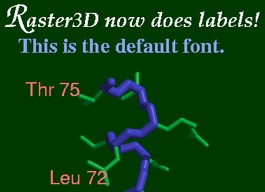

Example 1
Illustrates the use of material definitions to alter object properties,
and file indirection via the search path defined in environmental
variable R3D_LIB.
|
Example 2
A figure composed using the rods and balls
utility programs.
|
Examples 3, 4 and 5
Worked examples of converting and combining Molscript and GRASP output
files into a single Raster3D scene.
|

Example 6
Illustrates the use of command line options to render
(new in version 2.5),
including the use of an alpha channel to get a transparent background.
This figure was generated using the command below.
|

Example 7
A labeled figure produced by the label3d script.
The example script actually produces a
stereo pair that shows labels
positioned in three dimensions.
|

Example 9
A figure composed using the rastep utility program
for handling thermal ellipsoids.
|
|
render -size 162x192 -alpha -out r3d_example6.gif < example6.r3d
|
Example 8
A stereo pair made by the stereo3d script.
|
{kind=link}
 Back to top
Back to top